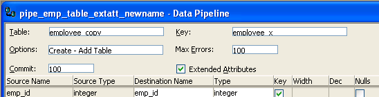

The Data Pipeline painter gives you the ability to reproduce data quickly within a database, across databases, or even across DBMSs. To do that, you create a data pipeline which, when executed, pipes the data as specified in the definition of the data pipeline.
With the Data Pipeline painter, you can perform some tasks that would otherwise be very time consuming. For example, you can:
 Piping data in applications You can also create applications that pipe data. For more
information, see Application Techniques
.
Piping data in applications You can also create applications that pipe data. For more
information, see Application Techniques
.
You can use the Data Pipeline painter to pipe data from one or more tables in a source database to one table in a destination database.
You can pipe all data or selected data in one or more tables. For example, you can pipe a few columns of data from one table or data selected from a multitable join. You can also pipe from a view or a stored procedure result set to a table.
When you pipe data, the data in the source database remains in the source database and is reproduced in a new or existing table in the destination database.
Although the source and destination can be the same database, they are usually different ones, and they can even have different DBMSs. For example, you can pipe data from an Adaptive Server Enterprise database to an Adaptive Server Anywhere database on your computer.
When you use the Data Pipeline painter to create a pipeline, you define the:
After you create a pipeline, you can execute it immediately. If you want, you can also save it as a named object to use and reuse. Saving a pipeline enables you to pipe the data that might have changed since the last pipeline execution or to pipe the data to other databases later.
Each DBMS supports certain datatypes. When you pipe data from one DBMS to another, PowerBuilder makes a best guess at the appropriate destination datatypes. You can correct PowerBuilder's best guess in your pipeline definition as needed.
The Data Pipeline painter supports the piping of columns of any datatype, including columns with blob data. For information about piping a column that has a blob datatype, see "Piping blob data".
The first time PowerBuilder connects to a database, it creates five system tables called the extended attribute system tables. These system tables initially contain default extended attribute information for tables and columns. In PowerBuilder, you can create extended attribute definitions such as column headers and labels, edit styles, display formats, and validation rules.
For more information about the extended attribute system tables, see Appendix A, "The Extended Attribute System Tables"
When you pipe data, you can specify that you want to pipe the extended attributes associated with the columns you are piping. You do this by selecting the Extended Attributes check box in the Data Pipeline painter workspace:

When the Extended Attributes check box is selected, the extended attributes associated with the source database's selected columns automatically go into the extended attribute system tables of the destination database, with one exception. When you pipe a column that has an edit style, display format, or validation rule associated with it, the style, rule, or format is not piped if one with the same name exists in the extended attribute system tables of the destination database. In this situation, the column uses the style, rule, or format already present in the destination database.
For example, for the Phone column in the Employee table, the display format with the name Phone_format would be piped unless a display format with the name Phone_format already exists in the destination database. If such a display format exists, the Phone column would use the Phone_format display format in the destination database.
Selecting the Extended Attributes check box never results in the piping of named display formats, edit styles, and validation rules that are stored in the extended attribute system tables but are not associated with columns in tables you are piping. If you want such extended attribute definitions from one database to exist in another database, you can pipe the appropriate extended attribute system table or a selected row or rows from the table.
If you want to reproduce an entire database, you can pipe all database tables and extended attribute system tables, one table at a time.